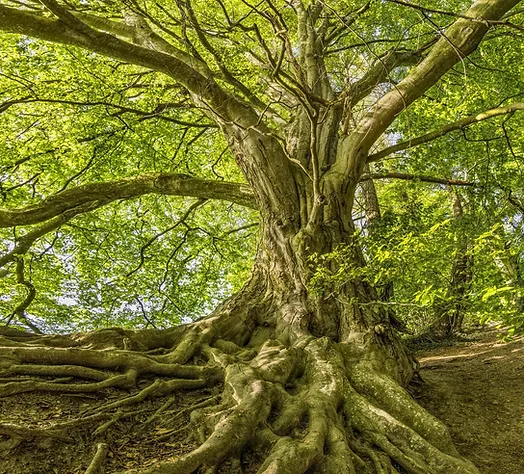

Türk kültüründe ağaç ve orman
 Türkçede ağaç sözcüğü su ve yeşillik kavramlarıyla ilintilidir. Yaşıl, yeşil ve yeşermek sözcükleri buna bağlı olarak gelişmiştir. Orhun Yazıtlarında da ağaç ve orman için "yış" sözcüğü kullanılmıştır. Anadolu insanı "yaş kesen baş keser" derken kastedilen "yaş" ağaç anlamındadır.
Orhun Yazıtlarında ağaç ve orman kutlu sayılarak ondan uzaklaşılmaması istenmiştir.
“Türk kağanı Ötüken ormanında oturunca İl’de sıkıntı yoktur.”,
“Ötüken ormanından daha iyisi hiç yokmuş. İl tutacak yer Ötüken orman imiş.”,
“Bunca yerlere ordu sevk ettim, Ötüken ormanından daha güzel bir yöre, ülkeyi idare edecek daha iyi bir yer
görmedim.”
Türk kültüründe ağaç ile ilgili en önemli inançlardan birisi de "hayat ağacı" düşüncesidir.
Hayat ağacı
yaratılışın kaynağı ve yer altından gökyüzüne kadar mekânı ayakta tutan bir direk olarak algılanmıştır.
İslamiyet öncesi Türklerde hayat ağacının yeşil kalması dünyanın
varlığını koruyacağı düşüncesini
yansıttığından bu durum adeta kâinatın bel kemiği olarak nitelendirilmiştir.
Bu inanış Yakut
Türklerinin
millî destanı Er-Sogotoh efsanesinde de yer almıştır.
Türklerin İslamiyet’i kabul etmesiyle birlikte
hayat
ağacı inancı değişmemiş yeşil kaldığı sürece Allah’ın “el-hayat” sıfatının tezahür ettiğine inanılmıştır.
Bugün Anadolu’da birçok tarihi yapıda hayat ağacı motifini görmek mümkündür. Soy ağacı, soy kütüğü gibi
nitelendirmeler insan ile hayat ağacı arasındaki bağlamı göstermesi açısından önemlidir.
Oğuz boyunun gelenek ve töreleri çok iyi bilen Dede Korkut ağaç
sevgisini anlatmak için şu dizeleri
söylemiştir.
Ağaç ağaç dersem sana, arlanma ağaç!
Mekke ile Medine’nin kapısı ağaç!
Musa Kelimin asası ağaç;
Büyük büyük suların köprüsü ağaç;
Kara kara denizlerin gemisi ağaç;
Şah-ı merdan Ali’nin Düldülünün eyeri ağaç;
Zülfekârın kını ile kabzası ağaç;
Er olsun, avrat olsun, korkusu ağaç;
Başını alıp bakacak olsam, başsız ağaç;
Dibini alıp bakacak olsam, dipsiz ağaç;
Beni sana asarlar, taşıma ağaç!
Eğer taşıyacak olursan, gençliğim seni tutsun ağaç!
Bizim ilde olmalıydın, ağaç!
Kara hintli kullarıma buyuraydım,
Seni bölük bölük doğraya idiler, ağaç!
Dede Korkut dualarında “Yerli kara dağın yıkılmasın. Gölgeli kaba ağacın kesilmesin.”, “Babamın adını sorar
olsan koca ağaç, Anamın adını dersen kükremiş aslan.” ifadelerini sık sık kullanmıştır.
Doğum ve ölüm gibi hayatla alakalı durumlarda ağaç dikmek Türklerin en eski adetidir. Dünyaya bir çocuk
geldiği zaman imkânlar ölçüsünde adına ağaçlar dikilir ve evleneceği zaman bu ağaçlar kesilip düğün için
harcama yapılır. Türkçemizdeki “dikili bir ağacım yok”
tabiri buradan gelmektedir. Yine ölüm vaki
olduğu
zaman mezara servi ağacının dikilmesi, düzgün boyuyla göğe doğru yükselmesi ve yeşil rengiyle ebedi hayatı
temsil etmesinden kaynaklanmaktadır.
Aynı şekilde çınar da servi gibi kutsal kabul edilen bir ağaçtır.
İhtişam, güç ve kudreti temsil eder. Osmanlılar, çınar ve serviyi kamusal alanlarda kullanmıştır. Bugün
Anadolu’da çok sayıda ağaçla ilgili yer isimleri, türküler, maniler, deyim ve atasözleri
mevcuttur
ağaçla
ilgili 1.500 civarında kutsal sayılan ağaç, ağaç yeri ve geleneksel tören tespit etmiştir. Bütün bu örnekler
göstermektedir ki Türk kültüründe ve inanışında ağaç daima temel kült unsurlardan birisi olmuştur.